01
About the Artwork
Insulae Incognita is a generative digital visual poem that composes an archipelago from scripts historically and culturally linked to the precolonial networks of the area now called Manila: Baybayin (Tagalog), Hanzi (China), Jawi (Brunei and Malay), Kana (Japan), and Devanagari (India), alongside modern Unicode forms. Scholarship on the precolonial and early colonial Philippines describes coastal polities as participants in regional maritime networks.1 The relationship between these scripts in the work is historical, geographic, and speculative. The work does not claim that every script shown was used together in Manila.
Characters are chosen for their visual affinity to waves, foliage, or mountains, then algorithmically arranged into clusters of “forest,” “land,” “shore,” and “water” whose distribution evokes island geographies. The color palette shifts through days, seasons, and weather. Occasional translations appear, such as the Hanzi 木 (“tree”) decomposing into puno, ᜉᜓᜈᜓ in Baybayin.
The installation version was exhibited with 98B in the First United Building in Escolta for the show proposal for (an)other history. The online version continues beyond the installation.
The title reworks the colonial concept of terra nullius (land without people) into insulae incognita. Terra becomes insulae, and nullius becomes incognita. I think of these as islands that cannot be completely known or mapped. Language is the land and sea: a living, shifting terrain of interaction.
By bringing scripts from neighboring cultures into contemporary code, the work performs an act of counter-language, counter-mapping, and counter-history. It attempts to resurface Southeast and East Asia's old interconnections and syncretic histories. Baybayin itself belongs to a wider group of Brahmi-derived Southeast Asian scripts, though the historical route by which these forms reached the Philippines remains uncertain.2
02
Visual Poetics
In conceiving Insulae Incognita, I was thinking about two different histories: concrete poetry during the dawn of the typewriter, and ASCII art in the dawn of computation.
In the tradition of concrete poetry, one well-known figure from Manila is José Garcia Villa, who, like e.e. cummings, experimented with the possibilities of type and punctuation in poetry. cummings's approach often leaned toward sparseness and used a great deal of white space. Garcia Villa tended toward saturation, filling the field with punctuation in the comma-filled structure of his poems and in his pure punctuation poems. In Villa's work, punctuation can be a primary visual element while also managing the rhythm or grammar of a poem.3
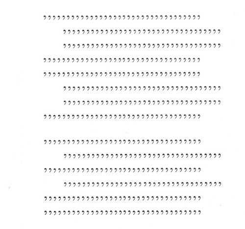
From here, it was easy for me to imagine one of Garcia Villa's poems as similar to the ASCII and text characters used in early computer games. Before graphics became widely available, games relied on text to produce visual effects and create worlds and terrain. A character could be read both as text and as an object in a world.
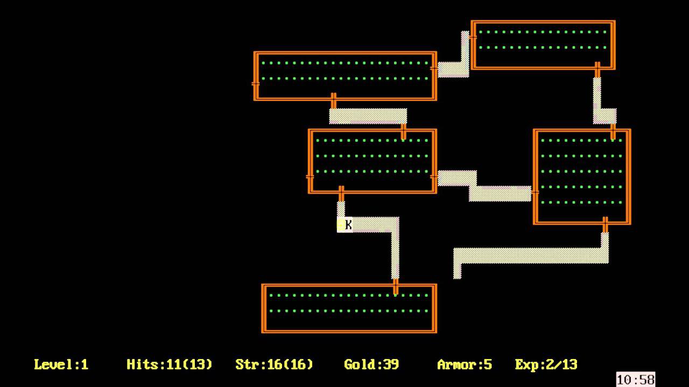
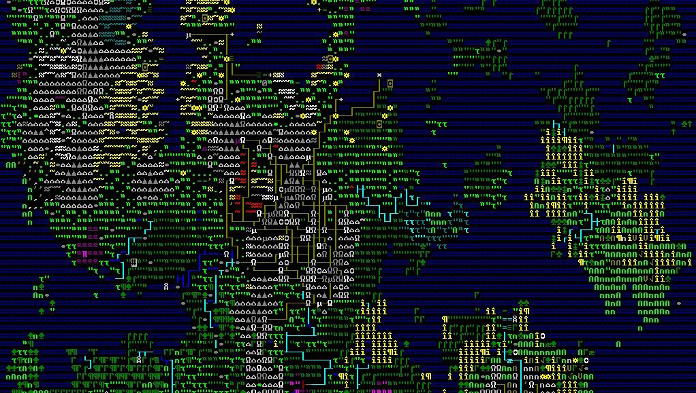
Insulae Incognita pulls Villa's punctuation-block formations into digital space and reframes them through this lineage of ASCII and text art. Its medium is the web, through a browser with HTML and CSS, rather than a console display. The browser provides visual manipulation through CSS and, most importantly for this work, the ability to incorporate scripts from different cultures in one space through Unicode and font collections such as Noto Sans and Noto Sans Tagalog.4
This ability to present cultural hybridity would not have been as easy in previous decades. The modern capability is what allows the work's central concept to function. The work is a digital landscape built from the debris and continuities of many textual worldings. It visualizes one possible interconnected, preglobalized, precolonial world.
03
The Digital Terra Nullius
The colonial concept of terra nullius, or land belonging to no one, is a mythology that allows colonial forces to justify taking and settling land. The land is treated as available because nobody is recognized as living there, or because its inhabitants are not recognized as a civilization with land rights. In Australia, the doctrine ignored the law, relation, and sovereignty of Indigenous people already living on Country.5
The title Insulae Incognita speaks directly to this concept. It changes terra (earth) into insulae (islands) and nullius (nothing or no one's) into incognita (unknown). The resulting islands cannot be completely known.
The idea of terra nullius remains present in digital worlds. In sandbox and 4X games—explore, expand, exploit, exterminate—the player often arrives in a procedurally generated world presented as open for discovery, mining, building, and settlement. Even when these worlds contain non-player lifeforms, they are often framed as resources, obstacles, or curiosities. The gameplay loop can reproduce the colonial mythology of a pioneer taming an empty frontier. Postcolonial game scholarship has examined how the spatial systems, political systems, and histories of videogames can carry ideas of empire and colonialism.6
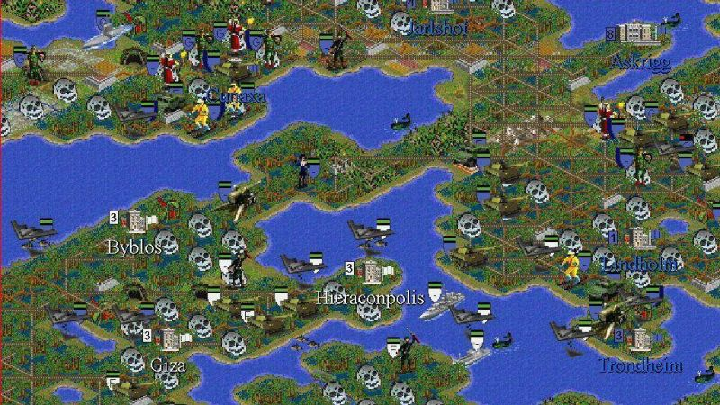
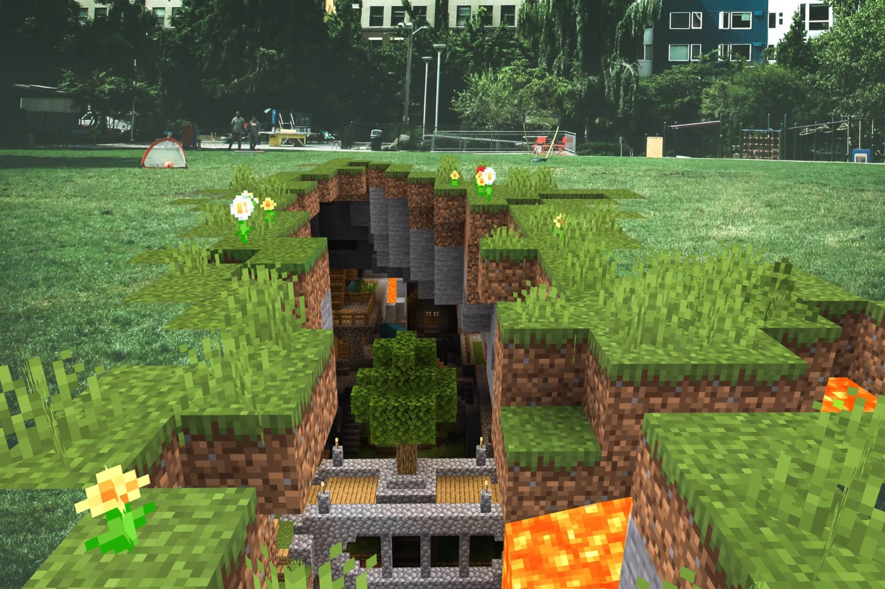
Insulae Incognita uses the visual language and algorithmic processes of procedural terrain generation from a different position. The land is language itself. It displays human and non-human presence, trade, and exchange before any supposed discovery. Together, the scripts form a geography that is already full and already in conversation with itself. There is no player avatar, inventory, mining system, or territorial objective. The audience observes the terrain as it continues to form.
04
The Terrain Algorithm, Code as Critique
A central goal of Insulae Incognita is to feel like a live, continuously scrolling transmission of a world being formed in real time. Each time the installation is activated, it generates a new archipelago.
This required a departure from common procedural-generation methods used in games such as Minecraft or Dwarf Fortress. These games often use methods such as Perlin noise to generate a field with relatively smooth heightmaps, followed by other layers for biomes. Perlin noise calculates gradients on a lattice and interpolates them to create coherent variation across space.7 The result can be a complete world that the player then explores.
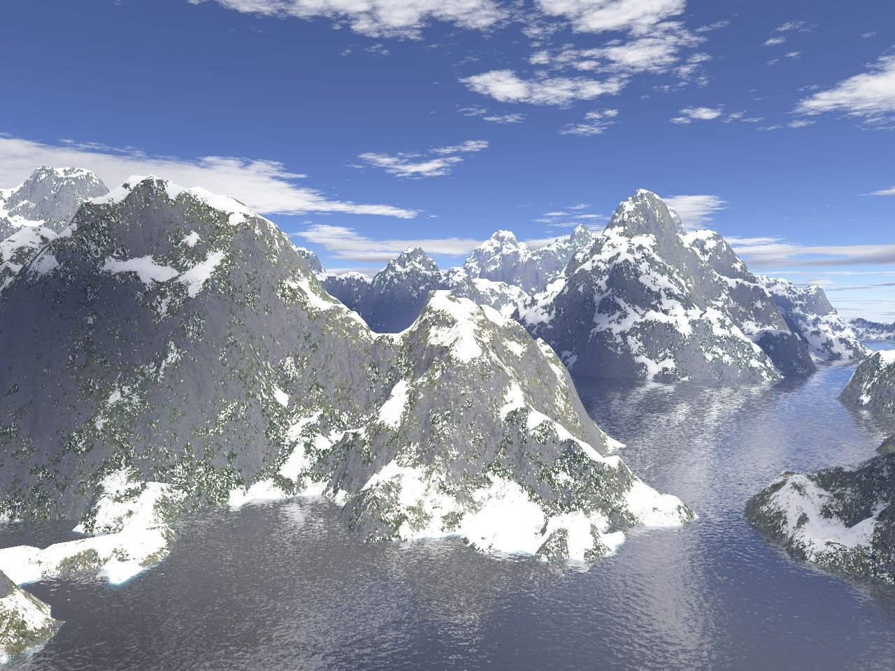
This artwork required an algorithm that could continuously generate terrain line by line. The system computes each new line from the line immediately before it. This creates the appearance of a scrolling ticker tape that is being written live rather than played back from a pre-generated source.
The logic for generating each new character, or cell, creates clustering so that continuous areas of land and water can form. The terrain identity of a new cell is determined by a weighted probability influenced by three sources:
- the cell directly above it in the previously generated line;
- the cell immediately to its left in the line currently being generated; and
- a randomly selected terrain type.
In the current implementation, these sources influence the new cell evenly: there is a one-third chance of copying the terrain type above, a one-third chance of copying the terrain type beside it, and a one-third chance of selecting a random terrain type. The random terrain types have their own probability weights. Water has the highest weight, producing the archipelagic terrain.
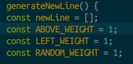
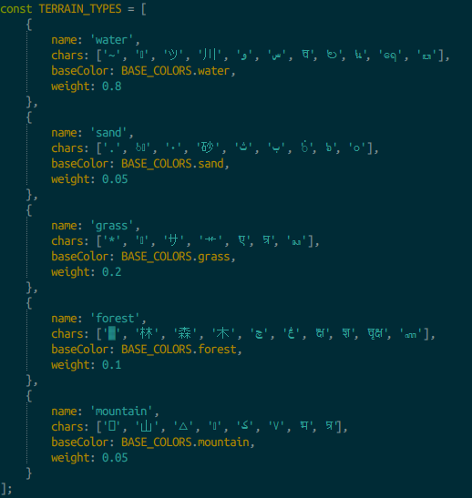
Once a terrain type is selected, the program chooses a character from the corresponding collection. Copying the cell above extends formations vertically. Copying the cell to the left extends them horizontally. Random selection introduces changes into those formations. The system holds only the previous line as memory.
The endless scroll also refers to present-day web scrolling and to new-media works such as Cory Arcangel's Super Mario Clouds. Arcangel's work uses a modified game cartridge that removes most of the elements of Super Mario Bros., leaving a scrolling skyscape.8 Insulae Incognita produces its scrolling landscape through a generative software process.
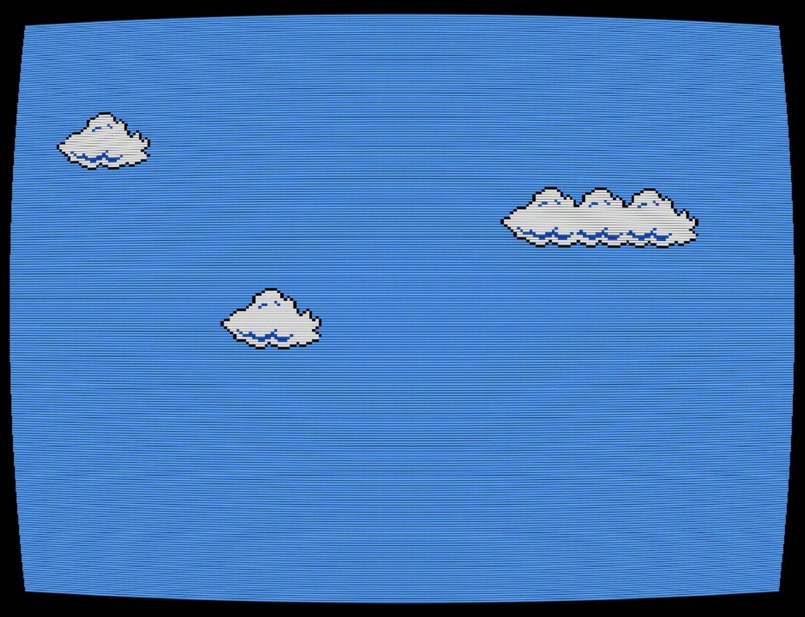
The algorithm generates a new field as it is rendered. I have given it a set of instructions—a digital score with rules, restrictions, and randomness—and the computer executes those instructions continuously. The terrain exists as an event in time. Older lines leave the screen as new lines are generated.
The implementation can be inspected in the terrain generator, glyph data, and translation module.
05
Code as Performance
The “digital score” approach draws from aleatoric, or chance-based, composition. John Cage used chance operations to create musical events that were not fully determined by his own compositional choices. In Music of Changes, Cage used I Ching-derived operations to determine parameters including tempi, dynamics, sounds, silences, and durations.9
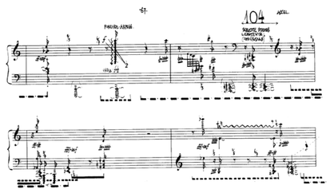
The use of randomness in Insulae Incognita serves a similar purpose. It also gives the computer a limited form of agency. The code's unpredictable element is a deliberate ceding of authorial control. I select the scripts, character sets, terrain types, weights, neighbor relationships, timing, and color behavior. The computer makes choices within those constraints, and I cannot predict the exact island it will produce.
The work also relates to computational, algorithmic, and aleatoric poetry by artists such as Jackson Mac Low, bpNichol, and Alison Knowles. Knowles and James Tenney's A House of Dust used a program to assemble quatrains from lists of materials, locations, light sources, and inhabitants.10
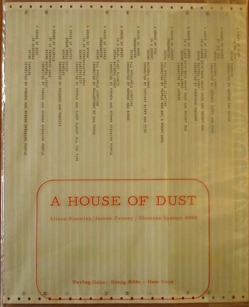
Many computational poems use chance during composition and then present a static output. Insulae Incognita treats generativity as performance. Its code is an open system whose execution is the work. Each page load produces a new sequence. The computer does not generate a finished text in advance; it performs the text continuously.
06
Translation and Hybridization as Tectonics
Within Insulae Incognita, occasional translations occur. A Hanzi character for “tree” may decompose into a Baybayin or Thai counterpart:
These are still few, but the concept can expand over time. Translation and hybridization become geological acts within the poem's world. The sizes and types of terrain are reshaped by exchanges and mutations of meaning between scripts. This reflects historical processes of language diffusion, creolization, and cross-cultural communication. Contact transforms words and also changes the structures through which people understand place.
The combination of algorithmic translation and procedural generation creates a geography that is always changing. The world remains difficult to map for three reasons:
- infinity: it has no designed final line;
- disappearance: older lines are removed as they leave the screen; and
- mutation: translations unpredictably alter terrain that has already begun to form.
Changes in color add temporality and weather. The audience sees a world being made and unmade. It can only be observed in parts and during the time of its generation.
07
Between Telephony and Computation
Insulae Incognita was placed in the First United Building Museum between old rotary telephones and mechanical adding machines. This put the piece in dialogue with two histories: telecommunications and computation.
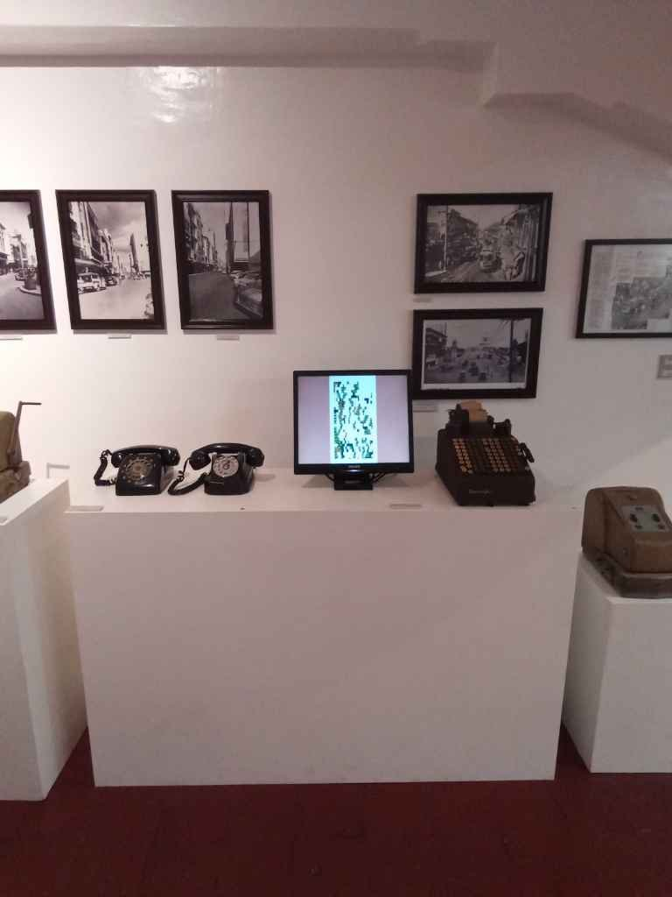
The artwork is fundamentally web-based and was adapted for an installation setting. The internet developed through the convergence of computer processing and communication networks.11 The work uses a communication network to transmit a live calculation.
There is a contrast between the physical forms. The older machines are heavy, mechanical, and dedicated to a single task. A thin screen and single-board computer can now perform several of those functions. At the same time, the visual output echoes the older machines. The scrolling column of text resembles a telegraph feed, stock ticker, or ledger of sums from an adding machine.
In the Philippines, telephones and adding machines were imported technologies that often arrived after adoption elsewhere. Their presence indicated forms of connection between the archipelago and the rest of the world, though that connection was slow, uneven, and mediated through foreign design.
A browser tab now transmits and computes at once. In Insulae Incognita, Baybayin is rendered beside Hanzi, Jawi, Kana, and Devanagari on that same surface. Modern typefaces and Unicode allow these scripts to appear where computation and communication happen.
The juxtaposition creates an anachronism. The artwork is technologically newer than the artifacts beside it, yet it attempts to resurface and reimagine a past older than those artifacts. It uses generative code, web technologies, and open-source hardware to speculate further backward and to respond to the machines as one of their descendants.
08
Limits of the Digital
The work is shaped by the limits of digital systems. Only scripts with modern Unicode encodings and usable font support can appear. Unicode encodes characters by script; it does not encode languages, oral forms, or the full cultural use of a writing system.12
This leaves out many written forms and oral languagings that once flourished in Manila and across the region. The scripts shown are contemporary descendants shaped by the demands of inscription, print, scholarship, standardization, type design, and code. Their presence in a browser does not reproduce their historical use.
These limitations are part of the work. The same changes that standardized the scripts, combined with the cultural memory of ASCII art, make it possible to imagine script as terrain. Within these bounds, the piece uses what can be rendered today to gesture toward what has been submerged. The past it imagines remains partial and obscured.
09
Installation and Operation
The installation version uses a monitor and Orange Pi to run the browser work as a dedicated display. The components are:
Display and computer
- one 37 × 36 × 18 cm monitor
- one Orange Pi
- one HDMI-to-VGA cable
- one keyboard
Power
- one Orange Pi power connector
- one monitor power cable
- one power hub with USB and three-prong plugs
- one 10 × 11 × 18 cm AVR
The installation can be placed wherever power, ventilation, and protection from moisture can be maintained. The Orange Pi connects to the monitor through its HDMI port and the monitor's VGA port. The Orange Pi and monitor connect to the power hub, which connects to the AVR.
Handling and operation
All components must be kept dry. The Orange Pi can be handled while kept in its paper covering, but its circuitry should not be touched because of the risk of short circuiting. Handle the board by its edges or with antistatic gloves.
Turning on: switch on the AVR and the monitor. The system should start on its own. It briefly displays the Armbian system before opening the artwork.
Turning off: with the keyboard, press Alt + F4 twice: once to exit the generative work and once to exit the system. A menu appears with reboot and shutdown options. Use the arrow keys to select shutdown. After the computer has shut down, switch off the AVR.
10
About the Artist
xyh tamura does transdisciplinary art and research colliding music, writing, visuals, science, technology, and performance. Their work includes experimental songwriting, electronic literature, videopoetry, conceptual art, and participatory methods.
Through their projects, xyh explores intermedia poetics, posthumanities, and the intersections of science, technology, culture, and globalization, often approached from an intersectional Filipino (Ilonggo) and Japanese perspective. xyh also composes scores for film and does research in philosophy and social development.
N
Notes
- William Henry Scott, Barangay: Sixteenth-Century Philippine Culture and Society (Quezon City: Ateneo de Manila University Press, 1994); Laura Lee Junker, Raiding, Trading, and Feasting: The Political Economy of Philippine Chiefdoms (Honolulu: University of Hawai‘i Press, 1999), https://doi.org/10.1515/9780824864064. ↩
- Unicode Consortium, “Philippine Scripts: Tagalog, Hanunóo, Buhid, and Tagbanwa,” in The Unicode Standard, version 17.0, chap. 17, accessed July 14, 2026, https://www.unicode.org/versions/Unicode17.0.0/core-spec/chapter-17/. ↩
- Nathan Timothy Chan, “I, began, to, Die, and, I, began, to, Grow: Incarnational Theopoetics in the Poetry of José Garcia Villa,” Perspectives in the Arts and Humanities Asia 13, no. 2 (2023), https://archium.ateneo.edu/paha/vol13/iss2/2/. ↩
- Noto Fonts, “Use Noto,” accessed July 14, 2026, https://notofonts.github.io/noto-docs/website/use/. ↩
- Australian Museum, “Terra Nullius,” Unsettled, accessed July 14, 2026, https://australian.museum/learn/first-nations/unsettled/recognising-invasions/terra-nullius/. ↩
- Souvik Mukherjee, Videogames and Postcolonialism: Empire Plays Back (Cham: Palgrave Macmillan, 2017), https://doi.org/10.1007/978-3-319-54822-7. ↩
- Ken Perlin, “Improving Noise,” in Proceedings of the 29th Annual Conference on Computer Graphics and Interactive Techniques (New York: ACM, 2002), 681–82, https://doi.org/10.1145/566570.566636. ↩
- Cory Arcangel, Super Mario Clouds, 2002, modified Nintendo cartridge and video installation, artist website, https://coryarcangel.com/works/2002-001-super-mario-clouds.html. ↩
- John Cage Trust, “Music of Changes,” John Cage Complete Works, accessed July 14, 2026, https://www.data-johncage.org/pp/John-Cage-Work-Detail.cfm?work_ID=134. ↩
- Alison Knowles with James Tenney, A House of Dust, 1967, computer-generated poetry, Ragnar Digital collection, https://www.ragnardigital.art/collection/a-house-of-dust. ↩
- Barry M. Leiner et al., “A Brief History of the Internet,” Internet Society, 1997, https://www.internetsociety.org/internet/history-internet/brief-history-internet/. ↩
- Unicode Consortium, “Basic Questions,” Unicode Frequently Asked Questions, accessed July 14, 2026, https://www.unicode.org/faq/basic_q.html. ↩
B
Bibliography
Arcangel, Cory. Super Mario Clouds. 2002. Modified Nintendo cartridge and video installation. Artist website. https://coryarcangel.com/works/2002-001-super-mario-clouds.html.
Australian Museum. “Terra Nullius.” Unsettled. Accessed July 14, 2026. https://australian.museum/learn/first-nations/unsettled/recognising-invasions/terra-nullius/.
Bay 12 Games. Dwarf Fortress. Computer game. 2006.
Cage, John. Music of Changes. 1951. Solo piano. John Cage Complete Works. https://www.data-johncage.org/pp/John-Cage-Work-Detail.cfm?work_ID=134.
Chan, Nathan Timothy. “I, began, to, Die, and, I, began, to, Grow: Incarnational Theopoetics in the Poetry of José Garcia Villa.” Perspectives in the Arts and Humanities Asia 13, no. 2 (2023). https://archium.ateneo.edu/paha/vol13/iss2/2/.
Junker, Laura Lee. Raiding, Trading, and Feasting: The Political Economy of Philippine Chiefdoms. Honolulu: University of Hawai‘i Press, 1999. https://doi.org/10.1515/9780824864064.
Knowles, Alison, with James Tenney. A House of Dust. 1967. Computer-generated poetry. Ragnar Digital collection. https://www.ragnardigital.art/collection/a-house-of-dust.
Leiner, Barry M., Vinton G. Cerf, David D. Clark, Robert E. Kahn, Leonard Kleinrock, Daniel C. Lynch, Jon Postel, Larry G. Roberts, and Stephen Wolff. “A Brief History of the Internet.” Internet Society, 1997. https://www.internetsociety.org/internet/history-internet/brief-history-internet/.
MicroProse. Sid Meier's Civilization II. Computer game. 1996.
Mojang Studios. Minecraft. Computer game. 2009.
Mukherjee, Souvik. Videogames and Postcolonialism: Empire Plays Back. Cham: Palgrave Macmillan, 2017. https://doi.org/10.1007/978-3-319-54822-7.
Noto Fonts. “Use Noto.” Accessed July 14, 2026. https://notofonts.github.io/noto-docs/website/use/.
Perlin, Ken. “Improving Noise.” In Proceedings of the 29th Annual Conference on Computer Graphics and Interactive Techniques, 681–82. New York: ACM, 2002. https://doi.org/10.1145/566570.566636.
Scott, William Henry. Barangay: Sixteenth-Century Philippine Culture and Society. Quezon City: Ateneo de Manila University Press, 1994.
Tamura, xyh. Insulae Incognita: Expanded Art Manual. Artist manual, 2026.
Toy, Michael, Glenn Wichman, and Ken Arnold. Rogue. Computer game. 1980.
Unicode Consortium. “Basic Questions.” Unicode Frequently Asked Questions. Accessed July 14, 2026. https://www.unicode.org/faq/basic_q.html.
———. “Philippine Scripts: Tagalog, Hanunóo, Buhid, and Tagbanwa.” In The Unicode Standard, version 17.0, chap. 17. Mountain View, CA: Unicode Consortium, 2025. https://www.unicode.org/versions/Unicode17.0.0/core-spec/chapter-17/.
Suggested citation
Tamura, xyh. “Insulae Incognita: Art Manual and Research-Creation Exegesis.” 2026. https://xyhtamura.github.io/insulaeincognita/about/.